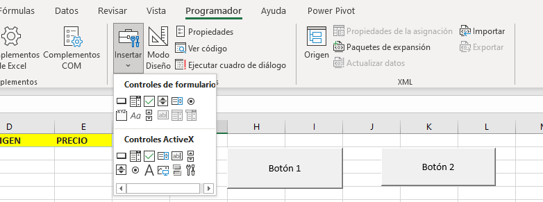
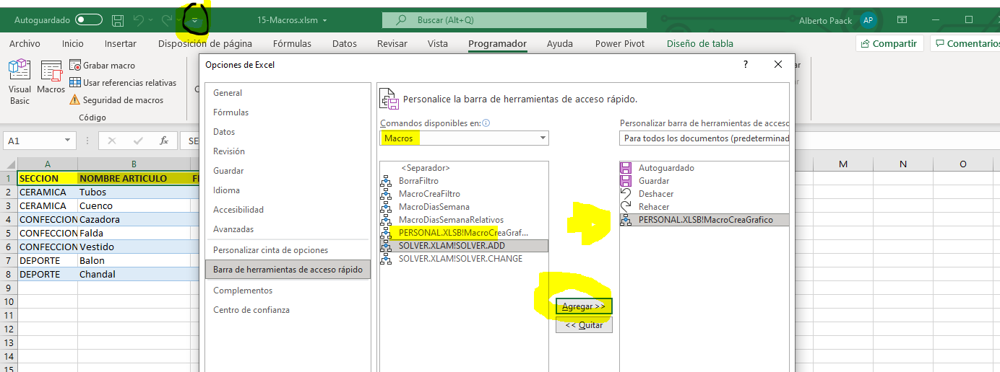
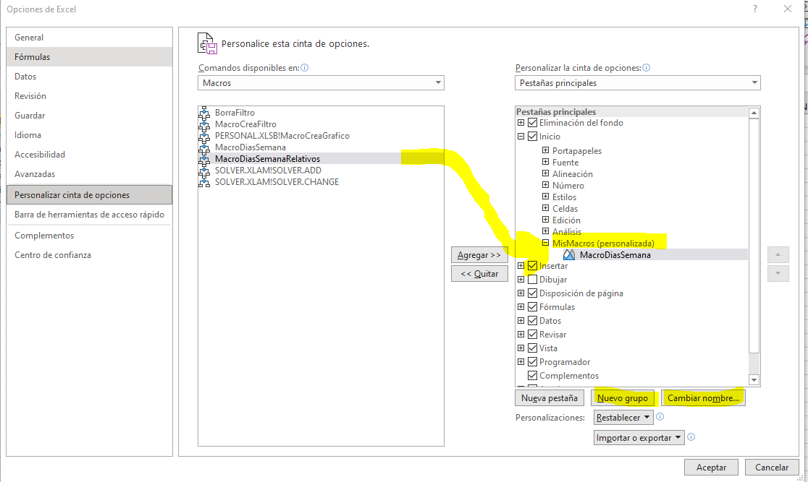
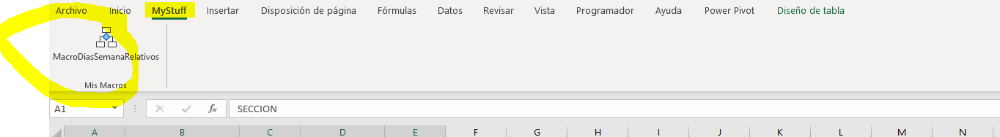
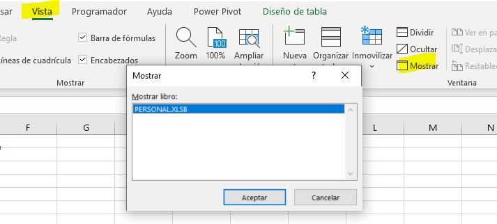

EXCEL MACROS
//MACROS BASICO
Macro instrucción para automatizar tareas en Excel. Tareas repetitivas
Instrucciones que se realizan de forma secuencial
2 Formas de crear Macros
1. Programando en VBA (Visual Basic for Applications). Lenguaje de programación propio, sin limitaciones, puedes crear apps Excel
2. Usando la grabadora de macros. Para cosas sencillas, con limitaciones, no es capaz a veces
Las macros están desabilitadas. Para Habilitar:
Archivo > Opciones > Centro de confianza > Configuracion > Configuracion de Macros
Habilitar y guardar
Recomendar habilitar ficha programador recomendado, trae herramientas muy útiles para grabadora o VBA.
Archivo > Opciones > Personalizar cinta de opciones > Activar Programador y guardar
Para lanzarlas se puede desde la ficha vista o desde la ficha programador
Para guardar, hay que guardarlo con extension .xlsm (si no, no guarda las macros).
Este libro: Solo sera válido para el archivo
Libro de Macros Personal: para varios archivos
Peligros de las macros, incluye codigo de programación que puede hacer cambios en el ordenador del que lo abre.
Shortcuts y Descripción
//MACROS VIDEO 43
Ejemplo 1: Escribir los dias de la semana:
CREACION DE MACRO:
Damos a grabar y grabara todos los cambios. Se puede parar desde varios lugares, otro es abajo a la izquierda
Se puede ver el código generado en VBA abriendo Visual Basic y yendo al proyecto > Módulos
Genera mucho código redundante
EJECUTAR LA MACRO:
Abrir nueva hoja y ejecutar macro
// USAR MACRO EN OTRA PARTE DE LA HOJA
Referencias Absolutas y relativas. Sempre usa referencias Absolutas, hay que lanzarla en las celdas con mismo nombre y numero en una nueva hoja
Hay que usar el botón usar referencias relativas. Desde vista Macros o desde Programador. Hay que pulsarlo antes de empezar a grabar
// LIMITACIONES
Al usar la macro crea una nueva hoja con otro nombre, guarda un pdf y cierra la nueva hoja. Pero al hacerlo varias veces da problema pq el nombre de la hoja cambia
//MACROS Y FILTROS
Hoja con datos Filtros
Creamos nueva hoja con zona de criterios y sin valores
Datos filtros avanzados
Copiar a otro lugar
Dejar zona de criterios vacia configurar el filtros
Macro 1: crear filtros
Macro 2: Borrar resultados
Ponemos datos en la zona de criterios y lanzamos la macro1
// BOTONES DE MACRO - Depende de la macro
Hoja de Cálculo: Si la macro es solo de este libro
Programador > Controles > Insertar > Controles de Formulario (Active X son de VisualBasic)
Se elige botón, se pone en la hoja y se le asigna la macro. Se puede cambiar texto, formato etc

Acceso rápido: Barra de acceso rápido arriba flecha. Hacer click para ver opciones > Mas comandos
Elegir macros y pasar al otro lado. Se puede cambiar el nombre y el icono a mostrar.

Cinta de opciones: Archivo > Opciones > Personalizar cinta de opciones. Similar al anterior
Elige nuevo grupo y le pones nombre

Si hay muchas, se crea una nueva pestaña desde el mismo menu.

// ELIMINAR MACROS
Desde seleccion de macros > Eliminar
Desde visual BAsic alt + F11: te abre los proyetos abiertos, y el que se abre por debajo. Carpeta Modulos
Eliminar desde el menu de macros personal (libro oculto)
vista > Mostrar (muestra libros ocultos) Acordarse de ocultar antes de cerrar excel
